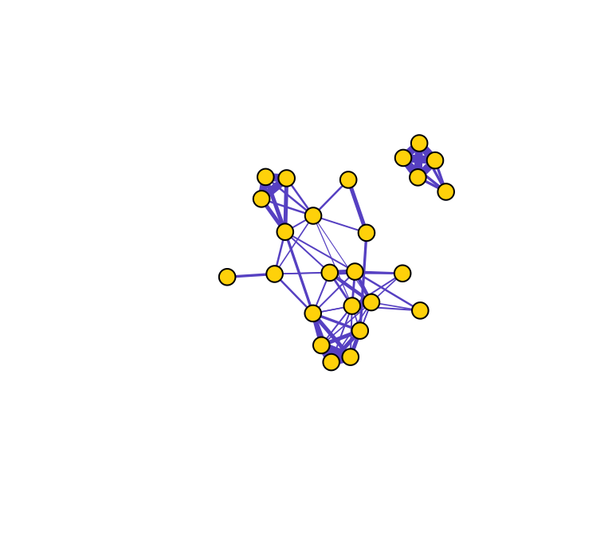
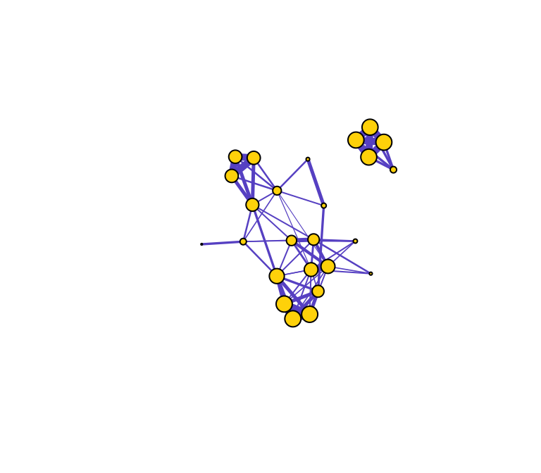
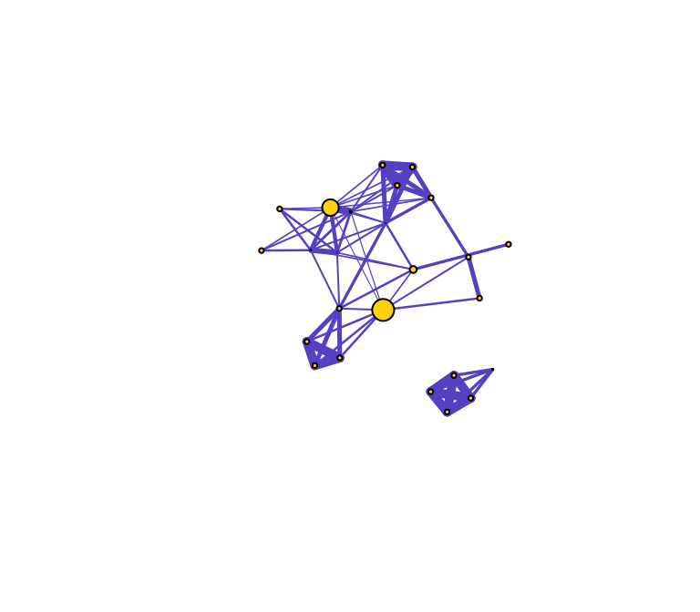
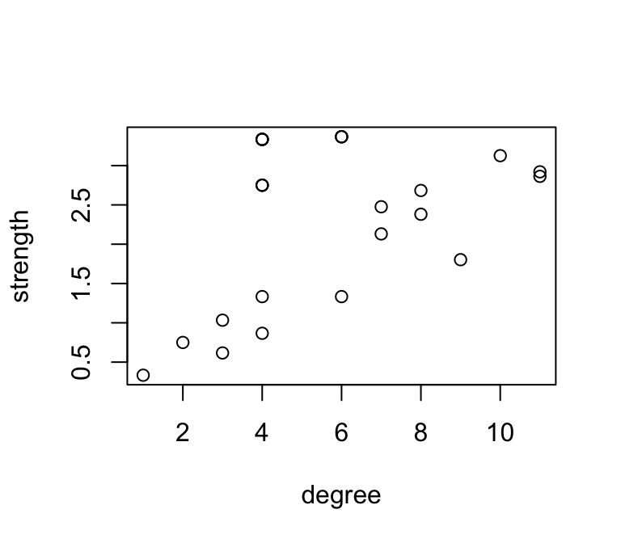
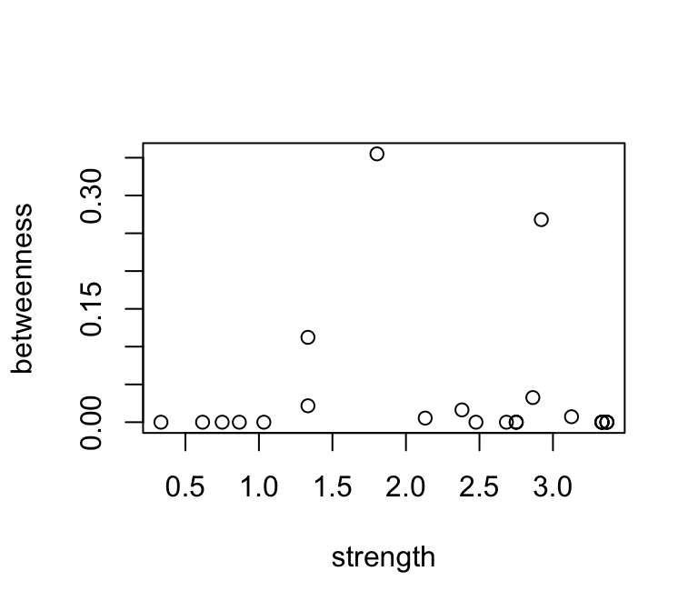
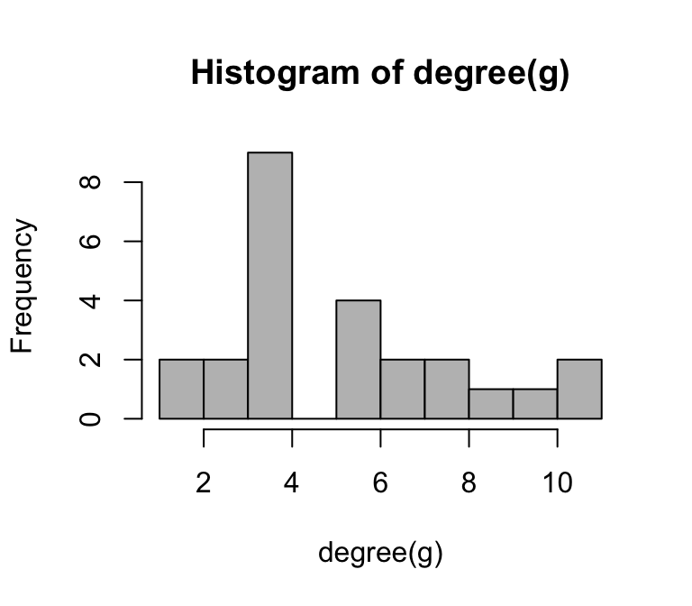
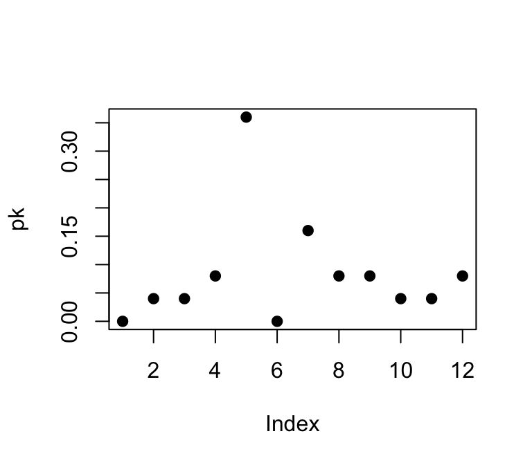

- Measuring Networks
Dai Shizuka
7/11/2018
Now that we have a handle on visualizing a network and the basics of relevant types of networks, we will go about the task of quantitatively describing its characteristics. There are multiple levels at which we can measure and describe networks:
- Node-level
- Subcomponent-level
- Networklevel
Let’s start by loading the sample social network we introduced in section 4.1. Here, we are going to be using both the igraph and asnipe packages.
library(asnipe)
library(igraph)
degree=igraph::degree
betweenness=igraph::betweenness
closeness=igraph::closeness
assoc=as.matrix(read.csv("https://dshizuka.github.io/networkanalysis/SampleData/Sample_association.csv", header=T, row.names=1))
gbi=t(assoc)
mat=get_network(t(assoc), association_index="SRI")
g=graph_from_adjacency_matrix(mat, "undirected", weighted=T) #create a graph object# plot the network
set.seed(10)
l=layout_with_fr(g)
plot(g, layout=l, vertex.label="", vertex.color="gold", edge.color="slateblue", edge.width=E(g)$weight*5)
5.1 Centrality Measures (i.e., node-level measures)
Centrality is a general term that relates to measures of a node’s position in the network. There are many such centrality measures, and it can be a daunting task to wade through all of the different ways to measure a node’s importance in the network. Here, we will introduce just a few examples.
5.1.1 Degree and Strength
Let’s start with the most straight-forward centrality metric: degree centrality. Degree centrality is simply the number of edges connected to a given node. In a social network, this might mean the number of friends an individual has. We can calculate degree centrality with a simple function:
degree(g)## 23820 23726 23831 23763 23772 23770 23771 23777 23774 23860 23779 23773
## 4 4 4 4 6 8 10 7 8 9 4 11
## 23862 23857 23871 23853 23732 23734 23756 23759 23768 23758 23781 23815
## 11 2 3 4 3 1 6 6 6 7 4 4
## 23809
## 4Let’s visualize what this means by varying the node sizes proportional to degree centrality.
set.seed(10)
de=igraph::degree(g)
plot(g, vertex.label="", vertex.color="gold", edge.color="slateblue", vertex.size=de*2, edge.width=E(g)$weight*5)
In weighted networks, we can also node strength, which is the sum of the weights of edges connected to the node. Let’s calculate node strength and plot the node sizes as proportional to these values.
set.seed(10)
st=graph.strength(g)
plot(g, vertex.label="", vertex.color="gold", edge.color="slateblue", edge.width=E(g)$weight*5, vertex.size=st*5)
Compare the relative node sizes when plotting by degree vs. strength. What differences do you notice?
5.1.2 Betweenness
Let’s now do the same for betweenness centrality, which is defined as the number of geodesic paths (shortest paths) that go through a given node. Nodes with high betweenness might be influential in a network if, for example, they capture the most amount of information flowing through the network because the information tends to flow through them. Here, we use the normalized version of betweenness.
be=betweenness(g, normalized=T)
plot(g, vertex.label="", vertex.color="gold", edge.color="slateblue", vertex.size=be*50, edge.width=E(g)$weight*5)
You can see that there are three nodes that have qualitatively higher betweenness values than all other nodes in the network. One way to interpret this is that these are nodes that tend to act as “bridges” between different clusters of nodes in the network (but of course, this is only sample data).
What does this say about the importance of these nodes? Well, that depends on the network and the questions–in particular how you might quantify ‘importance’ in your network.
Here’s a short list of some commonly-used centrality measures:
| Centrality Measure | Function | Description |
|---|---|---|
| degree | degree() |
Number of edges connected to node |
| strength | graph.strength() |
Sum of edge weights connected to a node (aka weighted degree) |
| betweenness | betweenness() |
Number of geodesic paths that go through a given node |
| closeness | closeness() |
Number of steps required to access every other node from a given node |
| eigenvector centrality | eigen_centrality() |
Values of the first eigenvector of the graph adjacency matrix. The values are high for vertices that are connected to many other vertices that are, in turn, connected many others, etc. |
5.1.3 Assembling a dataset of node-level measures
So now we know the basics of how to get centrality measures. For data analysis, we will likely want to measure and compare measures of node centrality with other traits. This will require putting together a dataframe that combines vertex attributes and centrality measures.
Let’s say we want to assemble a dataset of node centrality for our sparrow network. Let’s use the three centrality measures we already introduced:
names=V(g)$name
de=degree(g)
st=graph.strength(g)
be=betweenness(g, normalized=T)
#assemble dataset
d=data.frame(node.name=names, degree=de, strength=st, betweenness=be)
head(d) #display first 6 lines of data## node.name degree strength betweenness
## 23820 23820 4 3.333333 0.0000000
## 23726 23726 4 3.333333 0.0000000
## 23831 23831 4 3.333333 0.0000000
## 23763 23763 4 3.333333 0.0000000
## 23772 23772 6 1.333333 0.1123188
## 23770 23770 8 2.683333 0.0000000Let’s plot the relationship between degree and strength
plot(strength~degree, data=d)
Obviously, these are correlated, since strength is simply the weighted version of degree.
How about the relationship between betweenness and strength?
plot(betweenness~strength, data=d)
These are not well correlated, since they describe something different…
5.2 Network-level measures
5.2.1 Size and density
Let’s start by getting some basic information for the network, such as the number of nodes and edges. There are a couple of functions to help you extract this information without having to look it up in the “object summary” (e.g., summary(g)). Using these functions, you can store this information as separate objects, e.g., n for # nodes and m for # edges.
n=vcount(g)
m=ecount(g)
n## [1] 25m## [1] 70Since we now have the network size and the number of edges, we can calculate the density of the network. The definition of network density is:
density = [# edges that exist] / [# edges that are possible]
In an undirected network with no loops, the number of edges that are possible is exactly the number of dyads that exist in the network. In turn, the number of dyads is \(\frac {n(n−1)}{2}\) where n = number of nodes. Withthis information, we can calculate the density with the following:
dyads=n*(n-1)/2
density=m/dyads
density## [1] 0.2333333Of course, there is a pre-packaged function for calculating density, called edge_density():
edge_density(g)## [1] 0.23333335.2.2 Components
When networks are ‘fully connected’, you can follow edges from any given vertex to all other vertices in the network. Alternatively, networks can be composed of multiple components that are not connected to each other, as with our sample network above. We can get this information with a simple function (output not shown).
components(g)## $membership
## 23820 23726 23831 23763 23772 23770 23771 23777 23774 23860 23779 23773
## 1 1 1 1 2 2 2 2 2 2 2 2
## 23862 23857 23871 23853 23732 23734 23756 23759 23768 23758 23781 23815
## 2 2 2 1 2 2 2 2 2 2 2 2
## 23809
## 2
##
## $csize
## [1] 5 20
##
## $no
## [1] 2The output shows the node membership, component sizes, and number of components.
5.2.3 Degree distributions
Degree distribution—i.e., the statistical distribution of node degrees in a network—is a common and often powerful way to describe a network. We will play around with this more when we talk in depth about ‘random graphs’, but the specific degree distribution can help distinguish networks with specific properties (e.g., ‘scale-free networks’).
We could simply look at the degree distribution as a histogram of degrees:
hist(degree(g), breaks=10, col="gray")
However, if we wanted to compare the degree distributions of different networks, it might be more useful to plot the probability densities of each degree: i.e., what proportion of nodes has degree = 1, degree = 2, etc. We can do this by using a pre-packaged function called degree.distribution(). Try this out:
pk=degree.distribution(g)
plot(pk, pch=19)
5.2.4 Average path length & Diameter
In network jargon, a “path” is typically a shorthand for “geodesic path” or “shortest path”—the fewest number of edges that you would have to go on to get from one node to another. The average path length and the ‘diameter’ (maximum path length) can be useful measures of the network. The average path length can be considered the average “degrees of separation” between all pairs of nodes in the network, and the diameter is the maximum degree of separation that exists in the network.
You can calculate path lengths with or without the edge weights (if using edge weights, you often simply count up the weights as you go along the path). The igraph package includes a convenient function for finding the shortest paths between every dyad in a network. Here, makes sure you specify the algorithm = “unweighted” (output not shown):
paths=distances(g, algorithm="unweighted")## Warning in distances(g, algorithm = "unweighted"): Unweighted algorithm
## chosen, weights ignoredpathsThis matrix gives us the geodesic path length between each pair of nodes in the network. We can describe the network using some characteristics of the paths that exist in that network. However, you will notice that this matrix contains a bunch of cells that are “Inf” (i.e., infinity). This is because the network is not connected, and you can’t calculate path lengths between nodes in different components.
How should we measure the average path length & diameter of a network with multiple components? There are two common solutions. First is to ignore pairs of nodes that are in different components and only measure average lengths of the paths that exist. This solution doesn’t really make sense for the diameter–the diameter of an unconnected network should be infinity. The second solution is to measure each component separately. Let’s do each of these in turn.
Option 1: To calculate the average path length while ignoring pairs of nodes that are in different components, we can first replace the “Inf” with “NA” in the path length matrix. Next, we want just the “upper triangle” or “lower triangle” of this matrix, which is lists all the geodesic paths without duplicates.
paths[paths=="Inf"]=NA
mean(paths[upper.tri(paths)], na.rm=T)## [1] 1.865You can see that this is what the canned function mean_distances() does for unconnected networks because you will get the same value:
mean_distance(g)## [1] 1.865Option 2: To calculate the average path lengths and diameter separately for each component, we will first ‘decompose’ the network into a list that contains each component as separate graph objects. We can then use the lapply() function to calculate separate path length matrices, and sapply() function to calculate the mean and max for each matrix.
comps=decompose(g)
comps # a list object consisting of each component as graph object## [[1]]
## IGRAPH e76e412 UNW- 5 10 --
## + attr: name (v/c), weight (e/n)
## + edges from e76e412 (vertex names):
## [1] 23820--23726 23820--23831 23726--23831 23820--23763 23726--23763
## [6] 23831--23763 23820--23853 23726--23853 23831--23853 23763--23853
##
## [[2]]
## IGRAPH f139489 UNW- 20 60 --
## + attr: name (v/c), weight (e/n)
## + edges from f139489 (vertex names):
## [1] 23772--23770 23772--23771 23772--23777 23772--23774 23772--23860
## [6] 23772--23734 23770--23771 23770--23777 23770--23774 23770--23860
## [11] 23770--23781 23770--23815 23770--23809 23771--23777 23771--23774
## [16] 23771--23773 23771--23862 23771--23756 23771--23759 23771--23768
## [21] 23771--23758 23777--23774 23777--23779 23777--23773 23777--23862
## [26] 23774--23779 23774--23773 23774--23862 23774--23732 23860--23773
## [31] 23860--23862 23860--23857 23860--23871 23860--23781 23860--23815
## [36] 23860--23809 23779--23773 23779--23862 23773--23862 23773--23732
## + ... omitted several edgespath.list=lapply(comps, function(x) distances(x, algorithm="unweighted")) #make list object with two path length matrices## Warning in distances(x, algorithm = "unweighted"): Unweighted algorithm
## chosen, weights ignored
## Warning in distances(x, algorithm = "unweighted"): Unweighted algorithm
## chosen, weights ignoredavg.paths=sapply(path.list, mean) #average path length of each component
diams=sapply(path.list, max) #diameter of each component
avg.paths## [1] 0.800 1.815diams## [1] 1 35.2.5 Clustering Coefficient (Transitivity)
Clustering coefficients There are two formal definitions of the Clustering Coefficient (or Transitivity): “global clustering coefficient” and “locla clustering coefficient”. Though they are slightly different, they both deal with the probability of two nodes that are connected to a common node being connected themselves (e.g., the probability of two of your friends knowing each other).
Here are the verbal definitions:
Global Clustering Coefficient = “ratio of triangles to connected triples”
Local Clustering Coefficient = for each node, the proportion of their neighbors that are connected to each other
Average Local Clustering Coefficient: If \(C_i\) is the proportion of two nodes connected to node i that are also connected to each other (i.e., the Local Clustering Coefficient), then Average Local Clustering Coefficient = \(\frac {1}{n} \sum_{i=1}^{n} C_i\)
Try these:
g.cluster=transitivity(g, "global")
l.cluster=transitivity(g, "local")
av.l.cluster=transitivity(g, "localaverage")g.cluster## [1] 0.6219512l.cluster## [1] 1.0000000 1.0000000 1.0000000 1.0000000 0.4666667 0.4642857 0.5555556
## [8] 0.6666667 0.5714286 0.2500000 1.0000000 0.4727273 0.4727273 1.0000000
## [15] 0.3333333 1.0000000 1.0000000 NaN 1.0000000 1.0000000 1.0000000
## [22] 0.7142857 1.0000000 1.0000000 1.0000000av.l.cluster## [1] 0.7903199